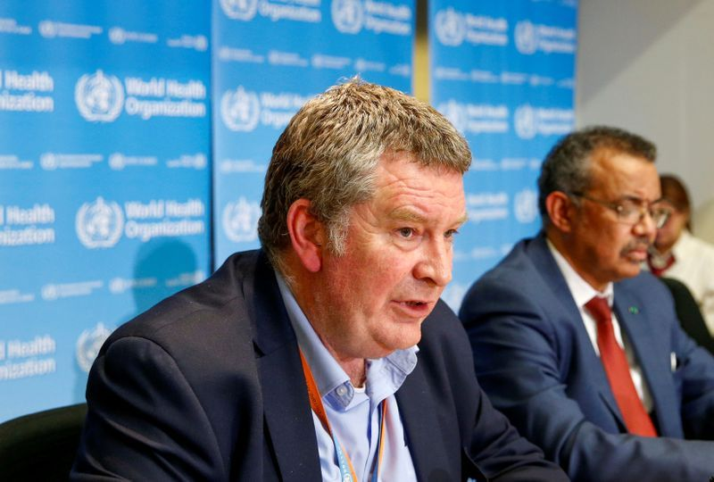

Latest News
WHO says Covid-19 'may never go away'
The World Health Organisation has warned that coronavirus “may never go away” as its experts predicted that a global mental health crisis caused by the pandemic was looming. The global health body on Wednesday cautioned against trying to predict how long coronavirus would keep circulating, and called for a “massive effort” to overcome it. “It is important to put this on the table: this virus may become just another endemic virus in our communities, and this virus may never go away,” said Michael Ryan, the WHO’s emergencies chief. “I think there are no promises in this and there are no dates. This disease may settle into a long problem, or it may not be,” he said. A report by the WHO’s mental health department to the UN warned of another looming crisis: “The isolation, the fear, the uncertainty, the economic turmoil – they all cause or could cause psychological distress,” said the department’s director, Devora Kestel. She said the world could expect to see an upsurge in the severity of mental illness, including amongst children, young people and healthcare workers. “The mental health and wellbeing of whole societies have been severely impacted by this crisis and are a priority to be addressed urgently,” she said.
Over 7,000 M'sians screened for Covid-19 at entry points
KUALA LUMPUR: The Health Ministry has carried out Covid-19 screenings on 7,182 people upon arrival in Malaysia, as of June 19. Senior Minister (Security Cluster) Datuk Seri Ismail Sabri Yaakob said of the total, 7,158 people tested negative for the virus and were ordered to undergo mandatory home quarantine while 24 others were found positive for the virus and were sent to hospital for treatment. "A total 528 Malaysians returned to the country and arrived at the Kuala Lumpur International Airport on June 20 (yesterday). "Of the total, 526 were ordered to undergo mandatory home quarantine, while two others were sent to the hospital," he said in a statement today.
12,289 premises disinfected since March 30
KUALA LUMPUR: 8,703 disinfection operations have been carried out in 134 zones since March 30, said Senior Minister (Security Cluster) Datuk Seri Ismail Sabri Yaakob. He said a total of 12,289 premises were sanitised, involving 2,672 business premises, 5,185 government buildings, 1,588 housing areas, 2,490 public areas and 354 supermarkets. "Yesterday, a total of 70 sanitisation operations in 43 zones in 11 states were conducted. "In Sarawak, 19 sanitisation operations were carried out followed by Melaka (14) and Sabah (10)," he said in his daily statement. On the mandatory quarantine, the Defence Minister said since June 10 to 18, the Health Ministry has conducted Covid-19 screening on 6,719 individuals at all the country's borders.
New Covid-19 cluster detected in Labu Lanjut, Sepang
A new Covid-19 cluster has been detected in Labu Lanjut in Sepang with five new positive cases, Health director-general Datuk Dr Noor Hisham Abdullah said. He said the index case was a patient with Acute Respiratory Infection who was being treated at the Serdang Hospital."The patient was tested positive on June 5. Active Case Detection that was carried out found that 4 of the patients' family members - 2 children and 2 grandchildren - have been tested positive with Covid-19 infection.
New Covid-19 cluster detected in Sarawak
The Health Ministry has detected a new Covid-19 cluster in Sarawak. Its director-general Datuk Dr Noor Hisham Abdullah said to date, six confirmed cases had been identified and linked to the new cluster dubbed as the Kidurong Cluster.The index case of this new cluster was a higher education institution student who tested positive for the virus on June 12. "The ministry later conducted active case detection (ACD) among the family members of the students.
Covid-19: Back to double digits
Malaysia has registered 21 new Covid-19 cases as of noon today, bringing the total tally of infections in the country to 8,556 - 289 of which are active cases. In a statement, Health director-general Datuk Dr Noor Hisham Abdullah said the 21 cases also included two imported cases - one Malaysian and one non-Malaysian, with the remaining 19 made-up of local transmissions of which seven are non-Malaysians, while 12 cases are Malaysians. Dr Noor Hisham said the seven locally transmitted cases among non-Malaysians were from close contact association with a positive Covid-19 patient, all of whom were housemates in Kuala Lumpur.
RMCO: Children can go out to play, eat and shop with parents
Children are allowed to leave homes to go to playgrounds, restaurants and shopping malls but parents should avoid bringing them to crowded places to prevent the risk of contracting Covid-19. Senior Minister (Security Cluster) Datuk Seri Ismail Sabri Yaakob said while there was no rules preventing children from going out, parents are reminded and encouraged to keep them safe at home, since children are a high-risk group for the disease.
Covid-19: 333 patients discharged; only 11 new cases
Malaysia today recorded its highest number of Covid-19 recoveries since the implementation of the Movement Control Order (MCO), with 333 patients being discharged from hospital. In a statement, Health director-general Datuk Dr Noor Hisham Abdullah said 307 of the recovered are foreigners and 26 are Malaysians. With this, he said, the total cumulative number of recoveries in Malaysia stands at 7,733 or 90.9 per cent of the total Covid-19 cases recorded in the country.
41 new Covid-19 cases today
Malaysia registered 41 new Covid-19 cases as of noon today, bringing the total cumulative cases in the country to 8,494. No new fatalities were reported, with the death toll remaining at 121. Announcing this today, Health director-general Datuk Dr Noor Hisham Abdullah said from the new cases, three were imported with the remaining being local transmissions.
Over 2,900 Malaysians screened for Covid-19
A total 2,921 people have so far been screened for Covid-19 upon arrival in Malaysia since the government enforced the mandatory home quarantine for returnees on June 10. Senior Minister (Security Cluster) Datuk Seri Ismail Sabri Yaakob said Health Ministry personnel have been carrying out Covid-19 screening at all entry points June 10. He said 2,911 of them tested negative for Covid-19 and allowed to undergo home quarantine, while 10 were found positive for the virus and were sent to hospital for treatment.
43 new cases include returnees, tahfiz centres, immigration depot, market
New Covid-19 cases were recorded among returnees from abroad, tahfiz centres, Bukit Jalil Immigration depot, market and an elderly care centre. Health director-general Datuk Dr Noor Hisham Abdullah said of the 43 new cases recorded today, five were detected among those who returned from abroad, seven among Tahfiz schools, 21 at the depot, one at a market in Penampang, Sabah, and one at an elderly care centre.